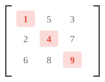
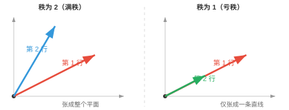
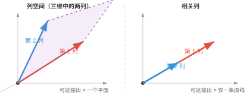
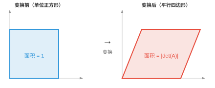
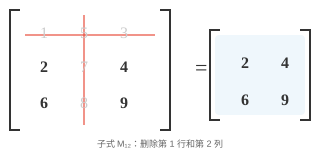

矩阵性质（Matrix Properties）¶
矩阵是存储数据集、编码变换并定义每个神经网络层的数据结构。本节介绍矩阵的维度、元素、转置、迹、行列式、逆、秩和零空间，这些性质贯穿线性代数和机器学习。
- 从本质上说，矩阵（matrix）是按行和列排列的矩形数值网格。若向量是一列数，那么矩阵就是由多个向量堆叠而成的结构。
大白话
矩阵就是把很多相关数字排成表格；一行或一列可以看成一个向量，整张表把它们组织在一起。
- 如果一个人由向量 \([\text{age}, \text{height}, \text{weight}]\) 描述，那么三个人就构成一个矩阵，其中每一行代表一个人：
大白话
每一行是一位人的完整资料，每一列都在比较所有人的同一种特征。
- 这个矩阵有 3 行、3 列，因此称为 \(3 \times 3\) 矩阵。
大白话
矩阵尺寸永远先报行数，再报列数；\(3 \times 3\) 就是三行三列的方格表。
- 网格中的每个数称为一个元素（element）或条目（entry），由其行和列标识：\(A_{ij}\) 表示第 \(i\) 行、第 \(j\) 列的元素。
大白话
\(A_{ij}\) 像表格坐标：先找到第 i 行，再找到第 j 列，就能定位那个数字。
- 矩阵的转置（transpose）是沿对角线翻转矩阵，将行变为列、列变为行。若 \(A\) 是 \(m \times n\) 矩阵，则 \(A^T\) 是 \(n \times m\) 矩阵。
大白话
转置相当于沿主对角线把表格翻一下：原来的横排变竖排，竖排变横排。
- 矩阵与其转置相乘总会得到方阵：\(AA^T\) 是 \(m \times m\) 矩阵，\(A^TA\) 是 \(n \times n\) 矩阵。
大白话
原矩阵无论是“高表格”还是“宽表格”，和转置配对相乘后，结果都会变成行数或列数相等的方阵。
- 方阵的迹（trace）是其对角线元素之和：\(\text{tr}(A) = A_{11} + A_{22} + \cdots + A_{nn}\)。迹等于特征值之和，后面会学到特征值。

大白话
迹只把从左上到右下那条主对角线上的数字相加，其他位置一律不管。
- 对上面的矩阵，\(\text{tr}(A) = 1 + 4 + 9 = 14\)。只有高亮的对角线元素相关。
大白话
算迹时像只读表格的对角线，旁边的数字再大也不会影响结果。
- 若两个矩阵在不同基下表示同一个线性变换，它们的迹相同。迹与所选基无关。
大白话
换一套坐标轴会改变矩阵写法，但不会改变迹；迹抓住的是变换本身的一个不变量。
- 矩阵的秩（rank）是线性无关行的数量，等价地也是线性无关列的数量。它告诉我们矩阵携带了多少“有用信息”。
大白话
秩就是表格里真正独立的信息方向有几条；重复行或重复列不会让秩增加。
- 例如，下列矩阵的秩为 2，因为两行互不为对方的倍数：
但下列矩阵的秩为 1，因为第二行恰好是第一行的两倍，没有增加任何新信息：
大白话
第二个例子的第二行只是第一行放大两倍，因此看似有两行，实际只提供一条独立方向。
- 一个 \(5 \times 3\) 矩阵的秩最多为 3。若一些行只是其他行的缩放或组合，秩会下降。具有最大可能秩的矩阵称为满秩（full rank）矩阵。

大白话
矩阵最多能有多少独立方向，受较短的那一边限制；满秩就是把这个上限用满。
- 方阵当且仅当满秩时可逆，即存在逆矩阵。
大白话
方阵没有丢失任何方向的信息时，才可以把变换完整倒回去。
- 秩通过秩-零度定理（rank-nullity theorem）与零空间（null space）相连。零空间是矩阵映射为零的向量集合：\(\text{rank}(A) + \text{nullity}(A) = \text{number of columns of } A\)。矩阵保留的维度（秩）加上它消除的维度（零度），等于总维度。
大白话
输入空间的每个方向要么被保留下来形成输出，要么被压成零；两类方向数加起来就是输入总维数。
- 矩阵的列空间（column space）是该矩阵乘以任意向量时所有可能输出的集合，它由矩阵的列张成。若一个矩阵有 3 列，但只有 2 列独立，那么它的列空间是二维平面，而不是整个三维空间。

大白话
列空间列出矩阵“做得出的所有输出”；独立列越多，矩阵能到达的方向越多。
- 行空间（row space）是从行的角度表述同一个概念。秩同时等于列空间和行空间的维数，因此它们始终一致。
大白话
从行看还是从列看，独立信息数量不会变，所以两种空间的维数都等于秩。
- 列空间回答“这个矩阵能产生什么输出？”，零空间回答“哪些输入会被映射为零？”。这两个空间完整地描述了矩阵的作用。
大白话
一个看矩阵能把输入送到哪里，一个看哪些输入会被完全消掉；合起来就知道这个矩阵保留和丢掉了什么。
- 方阵的行列式（determinant）是一个刻画矩阵如何缩放空间的标量。把 \(2 \times 2\) 矩阵看成把单位正方形变换为平行四边形，行列式就是该平行四边形带符号的面积。

大白话
行列式可以先理解成面积或体积被放大多少倍，同时还记录图形有没有翻面。
- 例如：
该变换会把单位正方形拉伸成面积为 6 的平行四边形。
大白话
行列式为 6 不表示每条边都放大 6 倍，而是表示整体面积变成原来的 6 倍。
- 若行列式为正，变换保持方向，即图形不会“翻面”；若为负，方向会翻转，如镜面反射；若为零，矩阵会将空间压扁到低维，把平行四边形塌缩成一条线或一个点。
大白话
正负号告诉你有没有翻面，绝对值告诉你缩放倍数；变成 0 则说明整个平面被压扁了。
- 行列式为零的矩阵称为奇异矩阵（singular）。它没有逆，且已经永久丢失了信息。
大白话
一旦两个不同输入被压到同一个输出，就无法再判断原来是谁，这就是奇异矩阵不能求逆的原因。
- 对大于 \(2 \times 2\) 的矩阵，行列式使用子式（minor）和余子式（cofactor）计算。子式 \(M_{ij}\) 是删除第 \(i\) 行和第 \(j\) 列后所得较小矩阵的行列式。

大白话
算较大矩阵的行列式时，子式就是临时删掉一行一列后留下的小矩阵，方便把大问题拆小。
- 余子式 \(C_{ij} = (-1)^{i+j} M_{ij}\) 给每个子式附加一个符号，像棋盘格一样交替：\(+, -, +, \ldots\)。完整矩阵的行列式可沿任意一行或一列求和：\(\det(A) = \sum_j A_{1j} \cdot C_{1j}\)。这称为按余子式展开（cofactor expansion）。
大白话
余子式是在每个小行列式前补上正负号；沿一行或一列逐项相加，就能递归算出大矩阵的行列式。
- 方阵 \(A\) 的逆（inverse）记作 \(A^{-1}\)，它会撤销 \(A\) 的作用：\(AA^{-1} = A^{-1}A = I\)，其中 \(I\) 是单位矩阵。只有非奇异矩阵才有逆。
大白话
逆矩阵就像“撤销键”：先做 A 再做 \(A^{-1}\)，会回到原来的向量。
- 对 \(2 \times 2\) 矩阵，逆有直接公式：
注意分母中的行列式，这也解释了为什么奇异矩阵的行列式为零时没有逆。
大白话
二维逆矩阵公式必须除以行列式；行列式为 0 时会除以 0，所以根本无法定义逆。
- 条件数（condition number）衡量矩阵对输入微小变化的敏感程度，定义为 \(\kappa(A) = \|A\| \cdot \|A^{-1}\|\)。
大白话
条件数是在问：输入只错一点点时，输出会不会被这个矩阵放大成很大的错误。
- 条件数接近 1 表示矩阵条件良好（well-conditioned）：小的输入变化只导致小的输出变化。条件数很大表示矩阵病态（ill-conditioned）：极小误差会被极大放大。正交矩阵和单位矩阵的条件数为 1，奇异矩阵的条件数为无穷大。
大白话
条件数小的矩阵比较可靠；条件数很大的矩阵像一把会把测量误差放大的放大镜，计算结果不稳定。
- 例如，下列矩阵的条件数为 \(10^8\)。一个方向按正常比例缩放，另一个方向几乎被压缩为零，因此沿该方向的微小扰动会被严重扭曲：
大白话
这个矩阵把一个方向几乎压没，之后想把它还原时，哪怕极小噪声也会被放大得很明显。
- 如同向量有表示长度的范数，矩阵也有衡量其“大小”的范数（norm）。最常用的是弗罗贝尼乌斯范数（Frobenius norm），它把矩阵视作一个长向量并计算其长度：
大白话
弗罗贝尼乌斯范数就是把矩阵所有格子的数平方、相加、开根号，当作整张表的总长度。
- 例如：
大白话
算法和向量长度完全一样，只是矩阵的每一个格子都算作一个坐标。
- 谱范数（spectral norm） \(\|A\|_2\) 是 \(A\) 的最大奇异值。它衡量矩阵对任一单位向量所能施加的最大拉伸量。在 ML 中，矩阵范数用于权重正则化，即惩罚过大的权重，也用于监控训练稳定性。
大白话
谱范数只关心矩阵最能拉长哪个方向；它能防止模型某个方向的权重变得过大而失稳。
- 对称矩阵 \(A\) 若对每个非零向量 \(\mathbf{x}\) 都满足 \(\mathbf{x}^T A \mathbf{x} > 0\)，则称为正定（positive definite）。这个二次型总会产生正数。
大白话
正定矩阵像一个任何方向都向上弯的碗：只要离开原点，二次型就严格为正。
- 例如，下列矩阵是正定的：
取任意向量，例如 \(\mathbf{x} = [1, -1]^T\)：\(\mathbf{x}^T A \mathbf{x} = 2 - 1 - 1 + 3 = 3 > 0\)。无论尝试哪个非零 \(\mathbf{x}\)，都会得到正值。
大白话
这个例子表明不论从哪个非零方向试，矩阵给出的“能量”都大于零。
- 正定矩阵很重要，因为它们能保证优化问题存在唯一最小值。
大白话
碗底只有一个最低点，优化算法就不会在多个同样低的位置之间犹豫。
- 若将条件放宽为 \(\mathbf{x}^T A \mathbf{x} \geq 0\)，允许结果为零，则该矩阵是半正定（positive semi-definite，PSD）的。PSD 矩阵极为常见：协方差矩阵、SVM 中的核矩阵和局部最小值处的 Hessian 都是 PSD。与正定的区别在于，PSD 允许某些方向是“平坦的”，即曲率为零，而不必严格向上弯曲。
大白话
半正定仍不会向下弯，但允许有完全平的方向；这些方向既不增加也不减少二次型。
编程任务（使用 CoLab 或 notebook）¶
-
计算一个矩阵的迹、秩和行列式。尝试让一行成为另一行的倍数，观察秩和行列式如何变化。
-
计算一个矩阵的逆，将其与原矩阵相乘，并验证得到单位矩阵。然后尝试奇异矩阵，观察会发生什么。